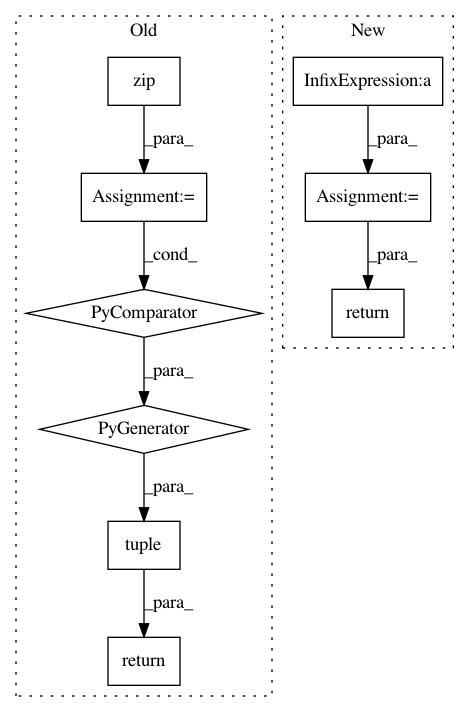

2b189592e0a169fc991bec98f39bbe8405e3440b,torchdiffeq/_impl/interp.py,,_interp_evaluate,#Any#Any#Any#Any#,38
Before Change
for _ in range(2, len(coefficients)):
xs.append(xs[-1] * x)
return tuple(_dot_product(coefficients_, reversed(xs)) for coefficients_ in zip(*coefficients))
After Change
x_power = x
for coefficient in coefficients[2:]:
x_power = x_power * x
total = total + x_power * coefficient
return total
In pattern: SUPERPATTERN
Frequency: 3
Non-data size: 9
Instances
Project Name: rtqichen/torchdiffeq
Commit Name: 2b189592e0a169fc991bec98f39bbe8405e3440b
Time: 2020-07-27
Author: 33688385+patrick-kidger@users.noreply.github.com
File Name: torchdiffeq/_impl/interp.py
Class Name:
Method Name: _interp_evaluate
Project Name: rtqichen/torchdiffeq
Commit Name: 2b189592e0a169fc991bec98f39bbe8405e3440b
Time: 2020-07-27
Author: 33688385+patrick-kidger@users.noreply.github.com
File Name: torchdiffeq/_impl/fixed_grid.py
Class Name: Midpoint
Method Name: _step_func
Project Name: rtqichen/torchdiffeq
Commit Name: 1b93cfeca5f2503eafc4ec773353254cf077fb9f
Time: 2020-07-28
Author: 33688385+patrick-kidger@users.noreply.github.com
File Name: torchdiffeq/_impl/fixed_adams.py
Class Name: AdamsBashforthMoulton
Method Name: _has_converged